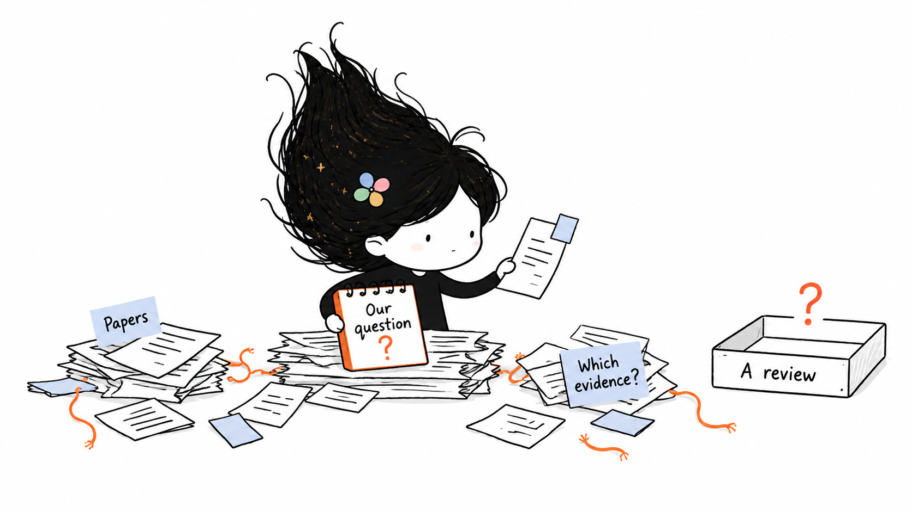

从文献出发，让判断有据可查。
先看熟悉的痛点和真实例子，再认识两个 skill，最后跟着工作台操作。

带上你的材料，
从这里开始。
关于画面、演示与解说
这些视频使用真实界面截图、流程示意与 Belle 概念插画。引导标注和镜头移动为后期制作；解说使用合成语音。
先看熟悉的痛点和真实例子，再认识两个 skill，最后跟着工作台操作。

这些视频使用真实界面截图、流程示意与 Belle 概念插画。引导标注和镜头移动为后期制作；解说使用合成语音。